1: Candlestick Charts
What is technical analysis
- way to make probabilistic forecasts of future price behaviour
- you don’t have to be a technical trader, you can use it to look for best risk/reward long entries if you’re fundamentally bullish on an asset
- can be thought of as a risk management tool
Candlestick Anatomy
- red = closing price below opening price
- green = closing price above opening price
- OHLC = Open, High, Low, Close
Side note: lines drawn on a particular time frame are still displayed at different time frames. You can label them to give you context without having to jump back to the original time frame
Time Frames
- dictates the time period that 1 candle represents
- for beginners, focus on higher time frames (eg. Cred’s favourites are Daily and Hourly time frames)
Candle closes are very significant, especially at higher time frames -> don’t get ahead of yourself before a candle close
Candlestick Patterns
- lots of candlestick patterns are reversal patterns. Beginner mistake is to try to trade every instance regardless of context. Don’t look for candlestick patterns when price is ranging, but do when there is a strong upwards/downwards trend
- Babypips Cheat Sheet
- Patterns mentioned in video:
- Doji (Neutral) 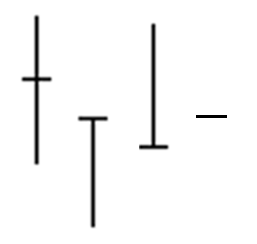
- Shooting Star (Bearish)

- Hammar (Bullish)

- Bullish Engulfing (Bullish)

- Bearish Engulfing (Bearish)

- Tweezer Tops (Bearish)

- Tweezer Bottoms (Bullish)

2: Risk Management
- Areas for further exploration: hedging, expectancy, laddering
- Lot of variables come down to personal preference
Manage risk so you can stay in the game
Stop Losses
 Stop Losses: an order to close a position at a certain price point/percentage to limit one’s losses
Stop Losses: an order to close a position at a certain price point/percentage to limit one’s losses
- stick to market stops, limit stops may not reach your actual target
- primary purpose is to protect a trader’s account balance when they are wrong on a trade (allows you to be profitable without having to win every time)
- based on technical analysis (not fixed percentages, R calculations etc.), place stop loss at invalidation level - point at which trader’s reason for taking the trade has been invalidated/disproved by the market aka where the price has no business of being with regard to your thesis. This will be unique depending on the setup
Risk Per Trade & Position Size
Risk per trade: what percentage of total equity a trader stands to lose per trade
- most traders trade within 2-3% of equity per trade
Calculation: total equity * risk % - does NOT mean a trader buys units worth that amount
- eg. if a trader risks $300, that means if the trader gets stopped out, they lose $300
Position size: the number of units of an instrument a trader purchases. Two pieces of information:
- risk per trade
- distance to stop loss from entry in percentage (%) terms
calculation: (total equity * risk %)/ distance to stop loss from entry - most platforms have calculators
R & Win Rate
R/risk-reward ratio: number which reflects the amount of risk undertaken relative to the reward of a trade
calculation: reward/risk
- no gold standard R
- again, based on technical analysis. Also means targets should be realistics
- TradingView has a calculator
Win rate: % which reflects how many of a trader’s total trades are winning trades over a given period of time
calculation: (winning trades/total trades) * 100
- Traders often split into two camps
- higher R lower win rate setups
- lower R higher win rate setups
- using average R, you can calculate the minimum win rate they must meet in order to be profitable
calculation:1/(1 + R) * 100`
Evolving R: the R of a trade is static upon entry, but as price moves away from entry, the R of the trade evolves and changes
- eg. price follows your thesis, misses your target by 1-2 points and then comes all the way back and stops you out for breakeven.
- recalculate R if it seems like the trade is changing
Handling Drawdown
idea that the market will, at some point, hand your ass to you is just about the only certainity in trading
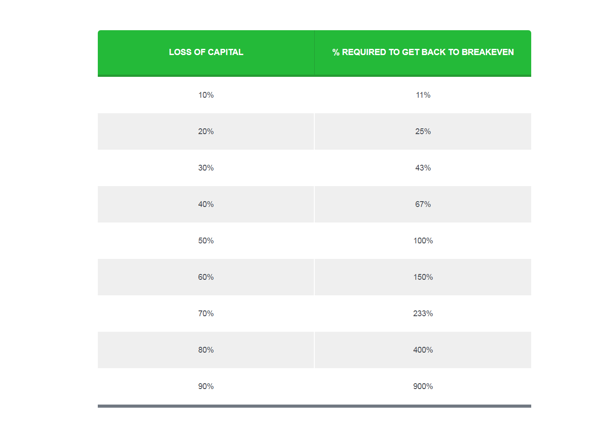
Make sure a losing streak will not wipe you out:

Potential drawdown mitigation checklist:
- Can your win rate and R take a losing streak on the chin? See table 2.
- Do you have trading rules/some sort of system for taking trades? Or are you gambling?
- Have you been following your trading rules?
- What links your losing trades? What links your winning trades?
- Do you simply need a break? Are you punting FOMO/revenge trades?
- Have you considered reducing your risk and increasing the quality of setups you take?
Margin
Margin: borrowing capital from your borker to open a position larger than one would other be able to
- Cross margin: your entire available balance will be used to avoid liquidation (aka liquidation = your entire account gets nuked)
- isolated margin: fixed margin for a certain position (aka liquidation = balance used to open position gets nuked) Liquidations: the price at which your losses are such that the exchanges will forcibly close your position
Position size calculation does not change
- risk must still be the same
3: Order Flow
market tend to make a lot more sense once you get into the mindsset of institutional order flow
Problems Institutional Traders Face
- trading a lot of size, there are issues with slippage and front running (dedicated people looking for your asks/bids and not letting you get filled eg. ladder, order book, chart)
- how do institutional traders get around this issue? By engineering liquidity
Liquidity
Longs = short liquidity (what do you need to go long? -> shorts)
Shorts = long liquidity (what do you need to go short? -> longs)
Going back to institutional trader dilemma:
- if you want sellers, you make the market look like it’s going to shit itself
- if you want buyers, you make the market look like it’s going to go vertical
Liquidity Pools: areas where there are likely to be a lot of limit orders/stops
- pending limit orders = untapped liquidity, which is released/triggered by price trading through a certain area
- how to identify liquidity pools? simple test: where are retail traders taught to put their stops?
- below swing lows
- above swing highs
- above range highs
- below range lows
- how to filter probable liquidity pools from less probable liquidity pools?
- Deep swing highs/lows → ones that stand out on the chart as swing points
- Swing points visible on the higher time frames tend to work better because more traders see them → more orders build up above/below them (Cred checks 15M, 1H, 1D)
- Extended consolidation ranges (orders on both sides of the range; traders trying to catch the breakout)
- HTF highs and lows (1D, 1W, even 1M)
- Equal highs/lows
- Always ask yourself: where are retail traders’ stops resting?
Stop Hunting
Stop Hunting: where price trades through an area where retail stops were resting before
- example of how a market takes out a low/“break support” before proceeding higher. Two forms of stops:
- stop losses of those who are long. When triggered, turn into market orders to sell
- limit order of those who are waiting to short. When triggered, turn into market order to sell
- The result is sell orders flood the market, creating engineered long liquidity. Institutions can find retail traders to buy from. Then they take the market higher
- In fact, sometimes institutional players will sometimes sell in order to force the market to go down, even if they want to long, because they know if they take out a specific low, there is a ton of liquidity that they can pick up
- retail traders' stops create the liquidity pools for the institutional traders
- this is often why markets will take out a low before going vertical or take out a high before falling off a cliff. How do you distinguish? You can’t with 100% accuracy, which is why it works, but there are things you can do:
- If possible, avoid putting your stops (both stop losses and limit orders) at obvious liquidity pool targets as discussed earlier
- Monitor the price action: if the move is a stop run, price will often give you a reaction when it takes out the high/low (tall wicks, slow down in momentum, failure to close above/below on a HTF, etc.)
- If you’re waiting for a clean break:
- Clean HTF candle close through the level e.g. H1/H4
- Safer: wait for the breakdown + bid/offer the retest
- Divergence
- Keeping a trading journal
Sidenote: this probably happens more right before big moves. There’s probably leading indicators for big moves, like when you could see somebody was consistently buying over weeks (which turned out to be Saylor buying his BTC through Coinbase OTC). Obviously, he’s not a trader but there’s probably data that would indicate institutions are active in the markets.
4: Horizontal Support/Resistance
- Art form, not a science when drawing levels
- Don’t try to force levels where they’re not clear - highest probability setups will come from clear setups that are worth waiting for
TradingView tips:
- horizontal line tool (Alt/Option+H)
- Magnet mode (snap)
- changing visibility so that lines are only visible on certain time frames
Resistance: area where we expect price to have a hard time going higher
Support: area where we expect price to have a hard time going lower
Two on the right on S/R flips:
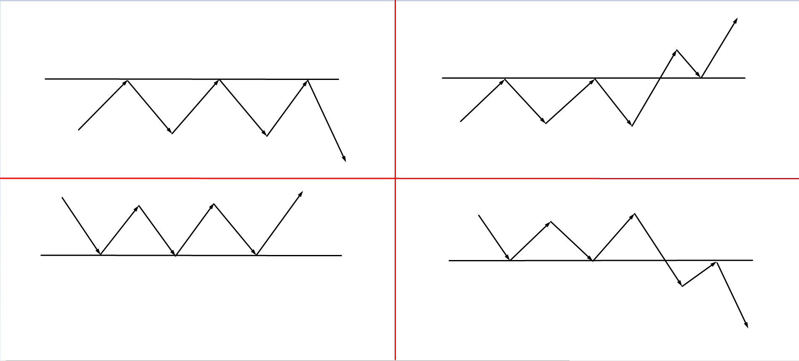
Principle 1 - S/R Flips
S/R levels flip when broken by price
- A support level that is broken = resistance
- A resistance level that is broken = support
broken: a clean candle close through the level
Principle 2 - Recurring Tests
The more a level is test by price from the same direction, the weaker it becomes
- Think of it as more buyers/sellers getting absorbed with each test until eventually, during the nth time, there’s not enough buyers/sellers to hold that level and it breaks
However, it becomes strong if/when the S/R flips
Principle 3 - First Test Best Test
Corollary of Principle 2: the highest probability level trade is the first test of a broken from the other side
- first test of a broken resistance level (expected support)
- first test of a broken support level (expected resistance)
Strong Level Criteria
- High number of touches (once the level has been broken)
- More touches from the same direction = weaker level as buyers/sellers absorbed
- But once the level is broken and price is on the other side, it is fresh
- Violent touches (once the level has been broken)
- Violence = how strongly price reacted upon testing the level
- More violence i.e. bigger swings away = better
- Based on recent price action
- Extremely important so you don’t use levels that were good in the past but have now been washed
- Read the chart from right to left
- Interested in what recent market participants are doing
- Long duration (once the level has been broken)
- Levels that were respected as S/R for longer tend to be stronger
- E.g. level that was resistance for several weeks is likely to be a stronger support (when broken) than a level that was resistance for only a few hours
Drawing tip: candle closes/body doesn’t really matter, but refine your level by making sure it is hinged on the most recent lows before break downwards/most recent highs before break upwards
Trading the Inverse: buying broken resistance & selling broken support
Types of Retests
Two types of retests:
- Micro retests: lower time frames, occur virtually immediately after a level is broken. Lower probability
- Rounded retests: higher time frame, time and space between break and retest. Higher probability
Time Frames
HTF are more reliable, but are way less frequent so you have to balance between quality and quantity
- Cred uses H1 and D1 time frames
5: Market Structure
Not a canonical view (if such a thing exists)
Defining Market Structure
Sequence of (proximate) highs and lows in a given instrument
Sequence
- Bullish MS = higher highs and higher lows
- bearish MS = lower highs and lower lows
Swing Low: low with a HL on both sides Swing high: high with a LH on both sides
Consider:
- recency
- significance of move following that high/low
- what’s the obvious/most outstanding high/low?
- if it doesn’t look like a clear swing point from first glance, it likely won’t be the best structure
Note: Can be complimented with trends eg. HTF bull trend sees a LTF MSB = opportunity to dip buy etc.
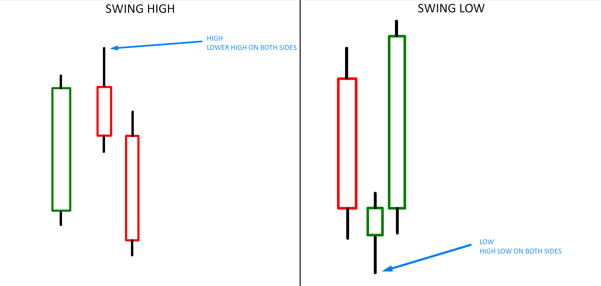
Selecting highs/low as MS anchors
-
use S/R as starting point
-
is the swing high/low confluent with another key level (eg. S/R, candle open)
-
focus on swing points that are visible and significant to the largest number of participants (low hanging fruit)
-
No unified MS per time frame
-
Don’t chase every MSB (sometimes it is a weak signal in an overridingly strong trend). Don’t become a breakout/breakdown chaser under the guise of MS
Identifying Breaks in Market Structure
A shift in the sequence of highs/lows in the opposite direction
- bullish MSB: sequence of LH violated by the HH
- bearish MSB: sequence of HL violated by a LL
There are different definitions, this is just Cred’s (if it’s good enough for Cred, it’s good enough for me)
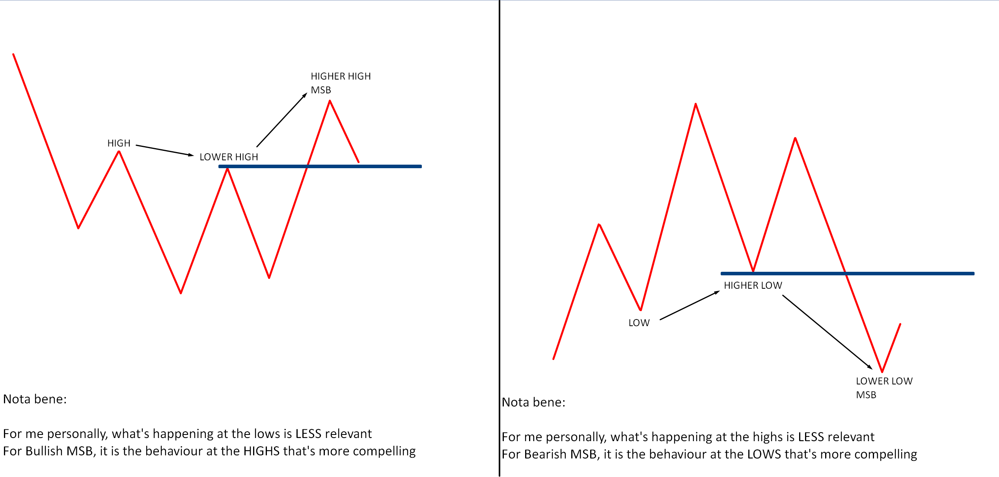
Candle bodies vs wicks: doesn’t matter, just be consistent.
- Variant that Cred uses: Bodies for MS and closes above/below for MSB
- Other variants:
- Wicks for MS and wicks above/below for MSB
- Wicks for MS and closes above/below for MSB
- You’ll know a good breakout if you see one. If a breakout depends on looking at wicks vs bodies, it’s probably not that good/clearcut of a breakout
Times Frames:
- next section!
- generally, break has to occur in same time frame as the MS anchor
Directional bias shift in direction of the MSB
- Bullish MSB = Anticipating another HH (with or without a HL) = Bullish outlook, favouring long-side trades
- Bearish MSB: Anticipating another LL (with or without another LH) = Bearish outlook, favouring short-side trades (or staying out/taking profit/hedging etc. if long-only)
If trading counter-trend in MSB: You have to be more defensive cause you’re going against the trend
- Counter-trend trades:
- Shorter holding periods
- More conservative targets/FTA
- Greater minimum R:R requirements (usually with closer invalidation, not wider targets)
- More active trade management
- Different sizing (smaller/more conservative)
- don’t let winners “run” (generally do this more when you’re with a trend, not against)
Trading in direction of trend:
- Flip these around when trading in the direction of the MSB (or trend more broadly)
Using market structure to filter good S/R:
aka Ask what the level achieved (it broke market sturcture)
- Resistance (high) that preceded a bearish MSB (lower low) is strong resistance
- Support (low) that preceded a bullish (MSB) higher high is strong support
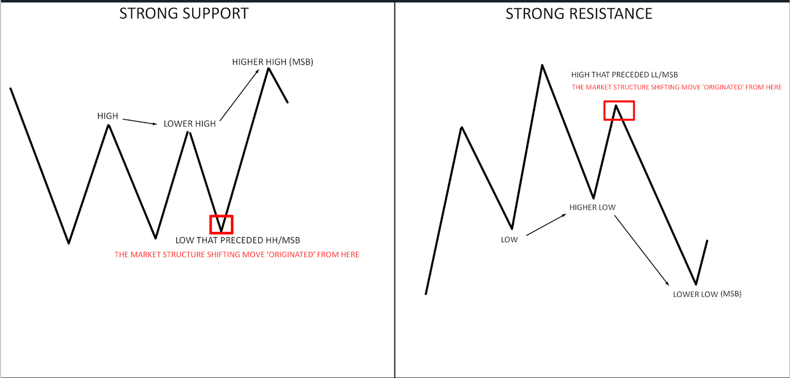
MSB as entry triggers:
Basic premise:
- Bearish MSB at resistance for sell setups
- Bullish MSB at support for buy setups
Time frame:
- High time frame (Weekly/Daily) structure as an area to do business
- Low time frame (Hourly/M15 etc.) MSB as the trigger for the trade
- This time frame logic is often scaled down e.g. M5-M15 MSB at intraday levels etc.
Confirmation: much easier said than done!
- Often a trade-off: good confirmation and shite entry versus little/no confirmation and great entry
- May create a poor habit of only entering a market once it moves (significantly) in your favour (DON’T DO THIS)
- Cred’s Approach:
- Daily market structure at Weekly levels
- (Or just using daily market structure on its own when the market is between levels and/or for LTF trading)
Trading Breaks in Market Structure
Trades where you are reacting after the fact
Three setups:
- Continuation from MS level/anchor
- Bullish MSB requires HH. The long trade is taken on a pullback to the broken high.
- Bearish MSB requires LL. The short trade is taken on a pullback to the broken low.
- textbook S/R
Identify MS → Identify MSB → Trade taken on a retest of Step 1
Invalidation: Failing to flip the MS level (to support if bullish/to resistance if bearish)
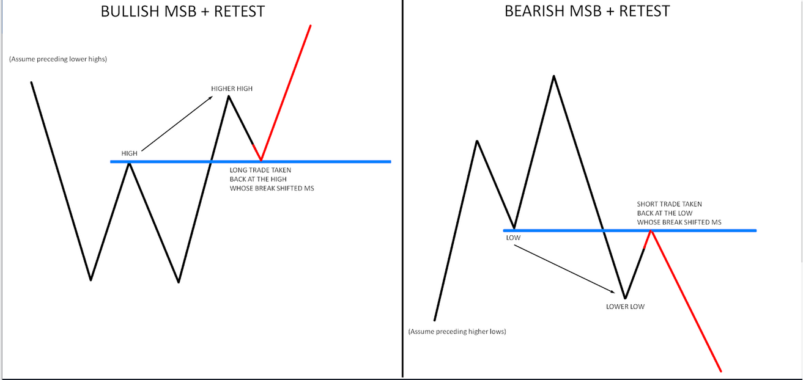 2. Continuation from pullback level
- Bullish MSB requires HH. Continuation trade is taken below the breakout point but above the most recent low.
- Bearish MSB requires LL. Continuation trade is taken above the breakdown point but below the most recent high.
- reasoning: breaking and waiting until it forms a HL (for bullish)
- not as clean as the first, but hey that’s life
- The MSB is an impulsive move. The market may continue the impulse (Setup 1) or retrace the impulse before continuing (Setup 2).
- where to look for retracement? Fibonacci retracement (lesson 7 below)
R:R consideration: The deeper price reaches into the pullback area, the superior the R:R
- This is because deeper pullback = closer to invalidation
- however, like always, depends on context
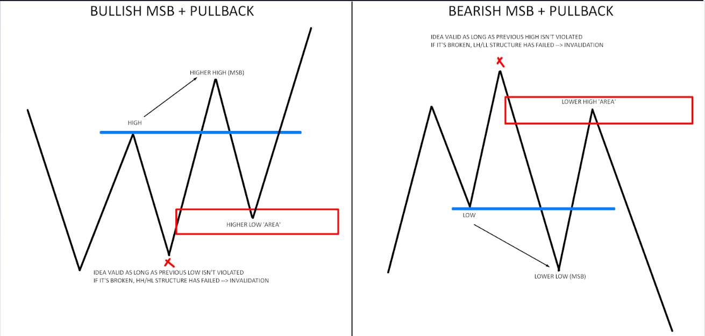
- Reversal
- focus on trading opposite of a MSB once certain conditions are met
- MSB failed to offer continuation. Failed continuation is suggestive of reversal
- reasoning:
- HH = Bullish / LL = Bearish
- Invalidation = LL / Invalidation = HH
- HH into LL = Bulls offside / LL into HH = Bears offside
- Bulls offside = Sell setup / Bears offside = Buy setup
Always seek to exert pressure on those weakest in the market
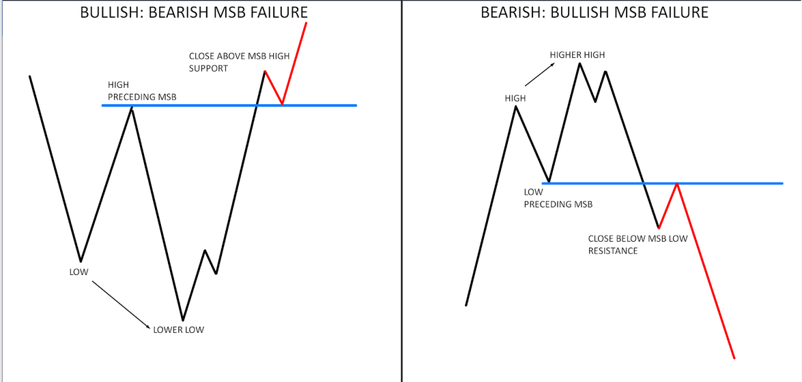
Disclaimers: don’t actively look for trades or force something on the market (especially relevant when you’re first learning something)
- you can do everything correctly and still lose money
- Don’t take ‘cut and reverse’ as a given (good bearish setups that fail are bullish and vice versa)
- Sometimes you just have the wrong read/identified a shitty time and place to do business
- Harder parts of setups is sizing, execution, management, choosing targets etc. → all separate videos/articles!
Nuances
Time Frame
- HTF will result in larger breaks and longer moves, LTF will result in smaller breaks and smaller moves
- lower time frame MSB does not cancel a HTF dominant trend
Market Structure in a Range
- In less volatile conditions, less obvious/shorter-term MSB can be pure noise/chop
- Best practice is to focus on MSB at the extremities of the range rather than chasing every HH/LL at the range midpoint
Slowdown/early signs of reversal
- One of the key benefits of MS is that it gives a lot of weight to recency. This can provide early hints of trend reversal or a slowdown more generally
- Be cognisant of shifts in behaviour when a dominant trend (or MS) is intact
- Bullish example: Clear lower highs and lower lows starting to form equal/higher lows
- Bearish example: Clear higher highs and higher lows starting to form equal/lower highs
- waiting for a clear signal is often too late
6: Time Frames
Managing Expectation
Trying to answer the question: what can be reasonably expected from price at a level on a given time frame?
Basic principles
- High time frame (“HTF”) trends are longer and harder to reverse
- Bigger moves more likely to originate from HTF levels (or intraday levels formed at/within HTF levels)
- Price can take more time to resolve at HTF levels
Time Frame Selection
- even for LTF traders, mapping HTF levels is useful
- just because you don’t draw a level doesn’t mean it stops existing (avoid getting smacked by an “invisible force” that ends up being just a HTF structure)
- you don’t need to “choose” just one time frame, depends on context
- Ascertaining trend/deriving directional bias
- Delineating levels
- Engaging the market/entry triggers
- Managing the trade
- The above do not have to be uniform when with regard to time frames
Trend Precedence/Market Structure
always more than one trend at any given time on an instrument
Question to ask: what is the dominant trend and what intraday conditions would allow for positioning in tandem with the trend?
General Principles:
-
Dominant trend is most reliably derived from HTF charts (Monthly/Weekly/Daily)
-
If a dominant trend is present on HTF then persuasive signs of reversal must also form on HTF
- I.e. not buying every green H1 candle in a weekly downtrend
-
HTF trends last longer than LTF trends (self-evident but easily forgotten)
-
LTF moves against dominant trend are counter-trend trading (fading) opportunities until proven otherwise (when you have a minor move you can either: 1. be an idiot and say “this time it’s different” and try to catch the bottom/top of reversal or 2. assume it’s just a retracement before continuing the dominant trend)
-
fading: stepping in when you see a minor retracement in an anticipation of trend continuation
-
sometimes you will be wrong and it will be a reversal, but it’s still better to assume (better to catch most of the move and lose 1 then lose most and win 1)
-
HTF bearish = broken support likely to turn resistance + selling rallies
-
HTF bullish = broken resistance likely to turn support + buying dips
same price behaviour, but depending on context (bullish vs bearish dominant trends) can mean completely different things
Refining & Contextualising Levels
common stumbling point: drawing every single level on a chart from a multitude of time frames
Refining:
- Delineate HTF level (silly as it may sound, use a thick line and different colour)
- Simplest way: lowest candle close preceding rally (support)/highest candle close preceding a decline (resistance)
- Find LTF levels in reasonable proximity to the zone
- Can elect to keep the refined LTF level, keep only HTF level, make a zone/box, and so on → guide/filter
- expectation to keep in mind is that a HTF structure, if it does its job, will steamroll LTF structure so don’t try to fade every move coming off HTF structue with nearby LTF structure. Again, context
- eg. if there’s a HTF support and LTF resistance $20 away, don’t sell at resistance if it bounces off HTF support because it’s probably going to steamroll LTF resistance
- use LTF levels as an area to compound trade or check in on your trade
Entry Triggers
Very personal/subjective: market at candle closes, blind limits, market following reaction at level, one hit versus scaling in, etc.
Cred’s opinions:
- HTF levels require more patience or, alternatively, can be given more time
- No need to be entirely uniform in time frame selection, especially with regard to entries
- Especially with ‘price action entries’ i.e. waiting for LTF evidence of strength/weakness at HTF levels
- LTF closes at HTF levels are not particularly reliable; you could end up selling the bottom/buying the top eg.
- if a weekly has a wick below the level, then there was probably a hourly/daily close below the level. That doesn’t mean the level is invalidated
- markets aren’t perfect, wait until close of timeframe 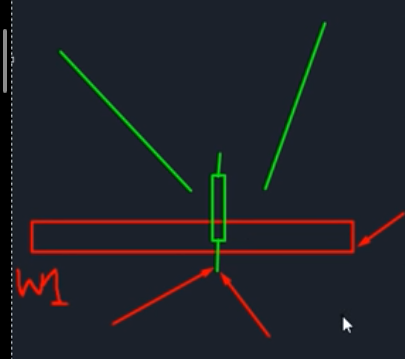
Trade Management
Most subjective part, real answers will come from trading journal -> managing a trade (and how) versus leaving original parameters as they were
Cred’s opinions:
- beginners have a tendency to be impatient at levels and look for excuses to manage a trade, give your ideas a time to play out
- being hand-offs in HTF trades is a skill in itself
- manage on same time frame that it is derived from (or slightly different eg H1 setup, manage on 30M/1H)
Important: Context > structure
Quick checklist:
- What is the dominant trend (if any)?
- Have I mapped my HTF (and LTF) levels?
- Am I aware what type of level/structure price is coming from?
- Given the above, is my fade or continuation entry reasonable?
- If yes, what are my entry criteria/parameters for engagement?
- How do I now manage the position?
7: Fibonacci Levels
Subjective; this video covers the basics
50%/0.5 isn’t a Fibonacci number but is an important retracement level nonetheless
Setting Up
TradingView: third from the top and then halfway down the dropdown
Settings: 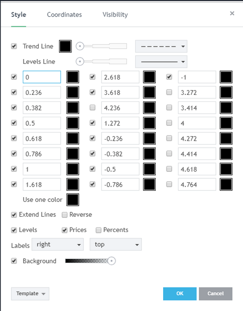
Fibonacci Anchor Selection - Which Highs/Low to Pick
Swing High: a high + lower high on both sides Swing Low: a low + higher low on low on both sides
Wicks or candle bodies? Cred uses the wick
Which specific swing high/low is a good place for an anchor?
- the good ones tend to be the obvious ones, deep/obvious/stand out swings → ones which your eye is drawn to
- Remember institutional order flow lesson: which swing high/low will entice traders?
- valid across all time frames
Using Fib Levels to Identify Support/Entries
Premise: using Fib levels to identify where price may retrace to after moving up
How:
- Identify the base of the rally - a swing low
- Identify the peak of the rally - a swing high/self-evident ‘top’
- Select your Fibonacci retracement tool
- Click 1: swing low
- Click 2: swing high
- Fibonacci levels will appear
Using Fib Levels to Identify Resistance/Targets
- Identify the peak of the rally - a swing high
- Identify the bottom of the move down - a swing low
- Select your Fibonacci retracement tool
- Click 1: swing high
- Click 2: swing low
- Fibonacci levels will appear
Using Fib Levels to Identify Resistance/Targets at ATH
Premise: using Fibonacci levels to identify plausible targets/resistance when price is at ATH
- Identify a significant swing high AND/OR ATH
- Identify a significant swing low AND/OR ATL
- Click 1: the high
- Click 2: the low
- Fibonacci levels, including extension (1.XXX/2.XXX et cetera) levels, will appear
Advanced Concept
One can also use the same Fibonacci setup to set targets if price finds support/resistance at a Fibonacci level by using negative fibs. However, take some profits at 0 in case it fails to break out
How Cred uses Fibonacci Levels
- Mapping 1D Fibonacci levels based on big moves/deep swings
- Confluence only → I never trade a Fibonacci level on its own
- because how do you know which fib/negative fib level to use? Depends on your other S/R levels
- I pay the most attention to .382/.5/.618 Fibonacci levels
8: Mastering RSI
In bull/bear markets, it’s not overly useful because it can stay overbought or oversold for a really long time
RSI: Relative Strength Index
- momentum oscillator which emasures the speed and change of price movements
- more valuable and accurate with more price data
- you can change the period. Shorter the period, more sensitive RSI becomes and wider its amplitude
- oscillator: a technical analysis tool that constructs high and low bands between two extreme values, and then builds a trend indicator that fulctuates within these bounds
Formula:
RSI = 100 - (100/1+RS) where
RS = Average Gain/Average Loss
Average Gain = [(previous Average Gain) x 13 + current Gain] / 14
Average Loss = [(previous Average Loss) x 13 + current Loss] / 14
Complete basics: an instrument is overbought when RSI is above 70 and oversold when RSI is below 30 (in bull markets, it becomes 80 and in bear markets, it becomes 20)
Trading RSI
- open long positions or close shorts when RSI crosses from below 30 to above 30 (bulls are stepping in)
- open shorts or close longs when RSI crosses from above 70 to below 70
- trade with the trend (if in a downtrend, sell the overbought with more confidence)
Midpoint Value Crosses
Three main uses (use on HTF like 4H and 1D):
- Indicate whether there’s a bullish or bearish bias in the trend (amount of time RSI spends above/below 50)
- Indicate whether a trend reversal will happen (treat 50 as S/R)
- Indicate periods of consolidation (cutting through both sides repeatedly)
Trendlines
- Simply, identify the trend of the instrument
- ‘Confirm’ a breakout/breakdown of a pattern
- Indicate trend reversals when RSI breaks resistance/support lines
Divergences
A divergence is when the oscillator shows something different than what price is showing i.e. the oscillator does not follow price
Bullish divergence: price makes lower low, indicator makes higher low
Bearish divergence: price makes higher high, indicator makes lower high
Hidden bullish divergence: price makes higher low, indicator makes lower low
Hidden bearish divergence: price makes lower high, indicator makes higher high
How to use:
- In a downtrend, to identify where bearish momentum is fading and pre-empting a trend reversal
- In an uptrend, to identify where bullish momentum is fading and pre-empting a trend reversal
- aka avoid buying the top or selling the bottom
Failure Swings
A failure swing is when at the extreme values, RSI fails to make a higher high/lower low and reverses in the opposite direction
Two types:
Top failure swing (peak in RSI over 70): fails to exceed previous peak in an uptrend and then breaks a previous bottom
Bottom failure swing (bottom in RSI under 30): fails to set a new low and then breaks a previous top
Uses: same as divergence (avoid buying top or selling bottom and predicate trend reversal)
9: Ichimoku Cloud
Setup: In tradingview, go into indicators and click ichimoku cloud
- adjusted settings for crypto (b/c it’s 24/7 market) and then double to get more conservative signals: 20/60/120/30
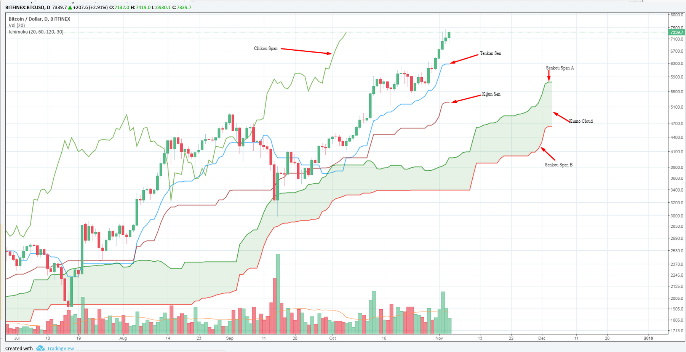
Finding S/R:
- kumo cloud
- kijun sen
- tenkan sen
- incorporated with other trend lines/levels/patterns etc.
Ichimoku Cloud Trading Strategies
Time Frames: 30M, 1H, 4H, 1D. Higher = stronger and less noise
-
Tenkan-Kijun Cross (TK Cross): when the Tenkan Sen (conversion line) crosses above or below the Kijun Sen (Base line)
- When Tenkan (blue) crosses from below to above cherry line, it’s bullish
- When it crosses from above to below, it’s bearish
Quality of signal depends on where it is in reference to the Kumo Cloud:
- Bullish TK cross above the Kumo = strong bullish signal, whereas the same TK cross below the Kumo only signals to close shorts (combining TK Cross with Kumo Breakout)
- Bearish TK cross inside the Kumo is a neutral bearish signal, whereas the same TK cross below the Kumo would be a strong sell signal
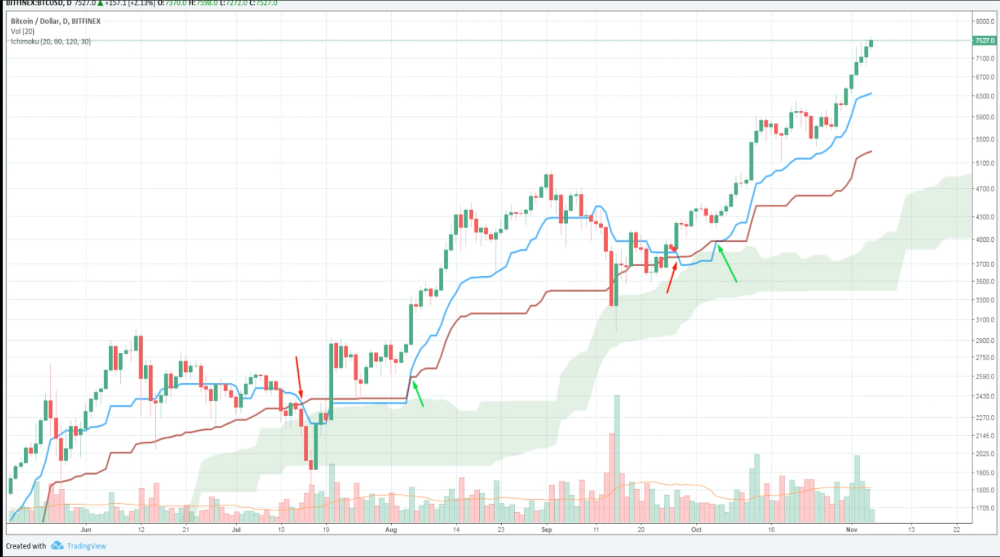
- Kumo Breakout
- when price breaks up through the top of the Kumo Cloud = bullish
- when price breaks down below the last line of the Kumo Cloud = bearish
- when price is within the cloud, this is a no-trade zone for Cred with the exception of an edge-to-edge (next)
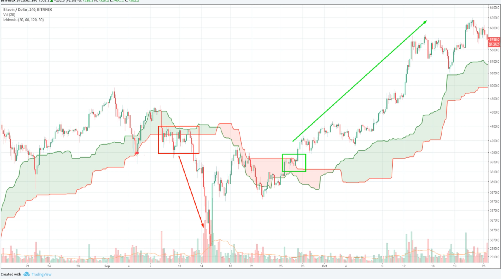
- Kumo Edge-To-Edge: if price enters the cloud and stays there, there’s a reasonable chance that price reaches the opposite end of the cloud especially if the opposite line is flat
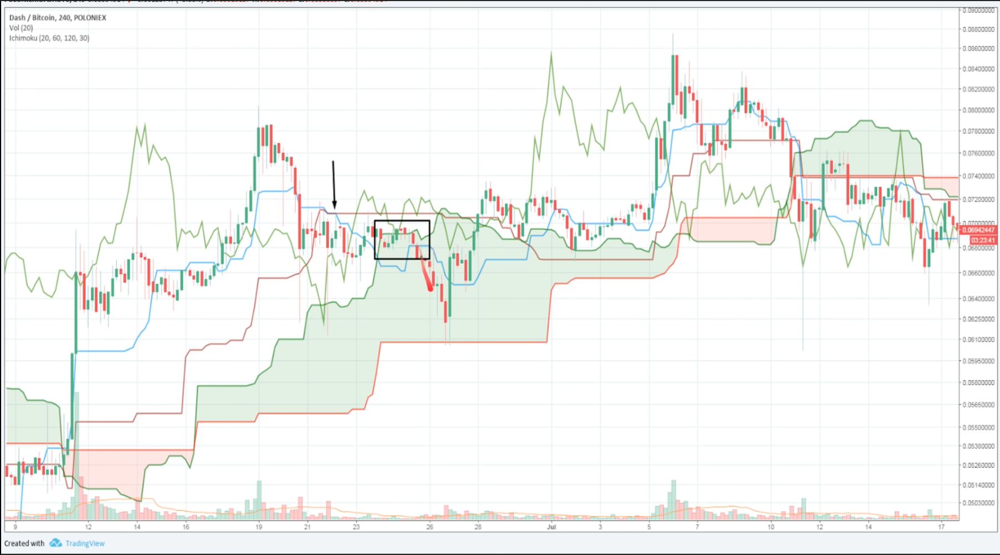
- Kijun Bounce: when price retraces to the Kijun Sen and successfully uses it as support level
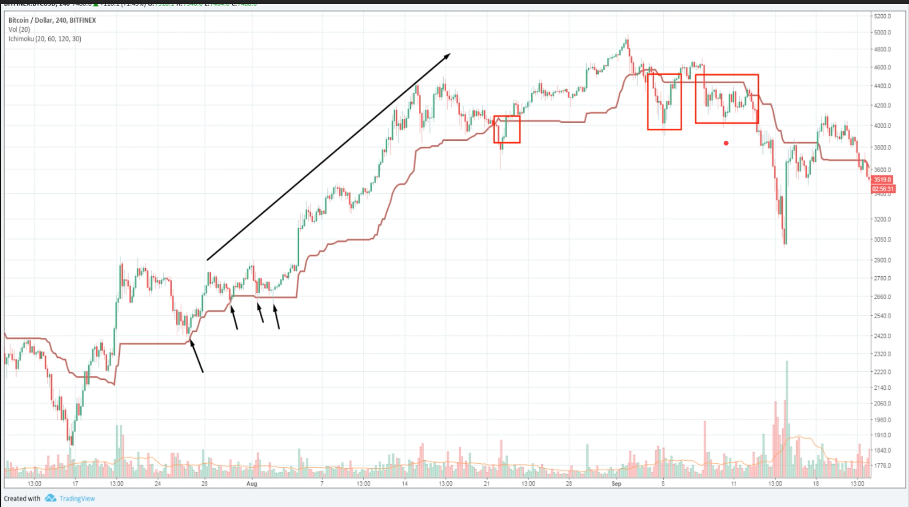
- Kijun Cross
- when price crosses from below to above the cherry line, it’s a bullish signal
- when price crosses from above to below the cherry line, it’s bearish
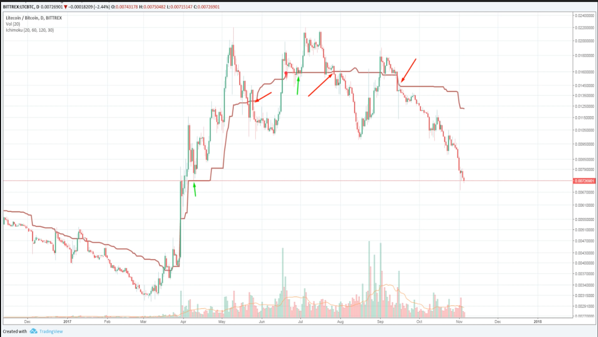
-
Kumo Twists/Senkou Span Cross
- If you want to buy, look for future Kumo to be green
- If you want to sell, look for the future Kumo to be red
-
Ichimoku as an Oscillator/TK disequilibrium: the greater the disparity between the Kijun Sen and the Tenkan Sen, the more overbought/oversold the price is (depending on the trend)
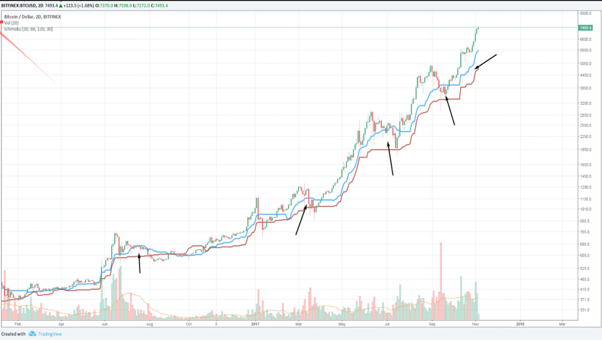
10: Entry Triggers
- Not exhaustive entry triggers
- Not a one-size-fits-all approach
Limit Orders: an order to buy/sell an instrument at a specific price (or better)
- Limit Sell: sell at/above market
- Limit Buy: buy at/below market
Pros: usually cheaper exchange fees
Cons: fills not guaranteed. As a result, stop loss orders must always be market orders
Market Orders: an order to buy/sell an instrument at the best possible price that is available immediately
Pro: guarantees full size execution/fill, instant
Cons: more expensive exchange fees, slippage
Limit Orders Entries
- BPC (Break Pullback Continuation): limit buy at a structure immediately after break upwards/limit sell at a structure immediately after a break downwards. Essentially break-and-retest strategy
- Cons: more attention to lower time frames, low probability of working
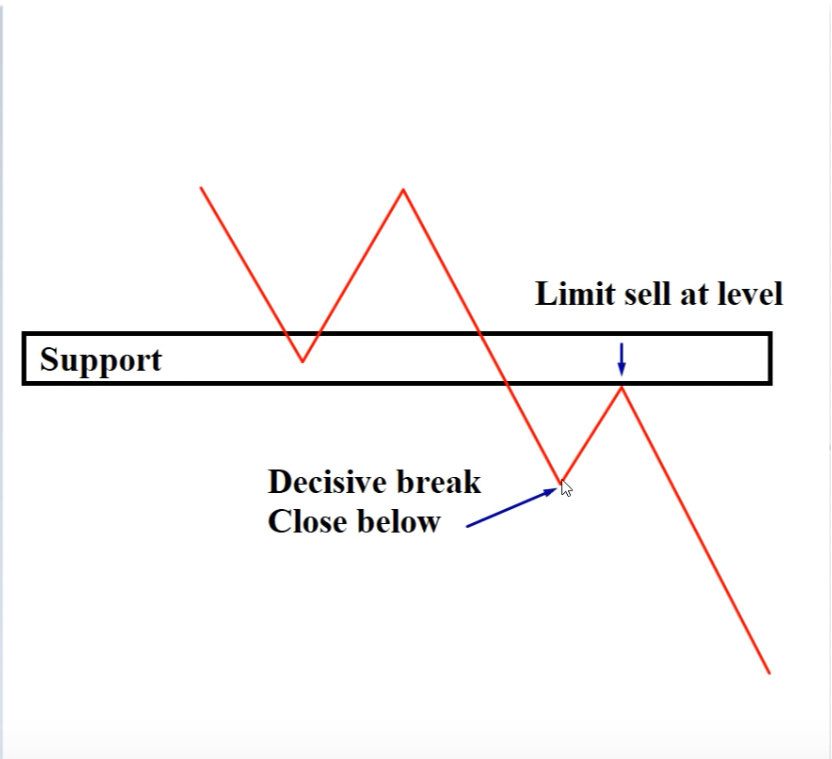
-
Rounded Retest: limit buy at a structure after break upwards with time and space/limit sell at a structure after a break downwards with time and space
- Pros: higher probability, higher time frame
- Cons: tunnel vision/easier to lose sight of context, easier to “forget” about the trade 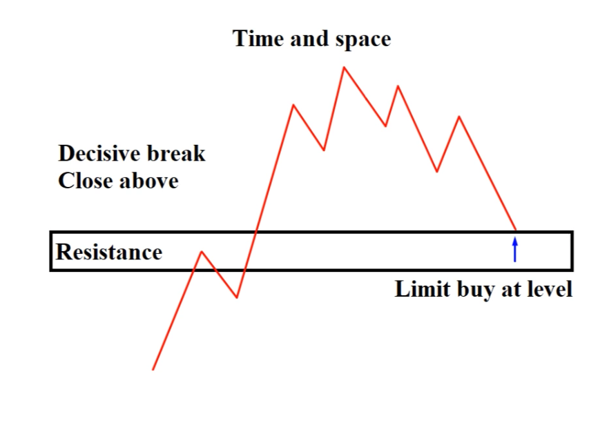
-
Conditionals: limit buys below old lows in bullish conditions/limit sells above old highs in bearish conditions
- hardest one, Cred doesnt use it at all.
- Pros: minimal drawdown
- Cons: stop placements not always clear, not always intuitive to choose which highs/lows will be run if stops have built up e.g. diagonal trend
Market Orders Entries
- Market Structure: market buy at support if low time frames are breaking upwards/market sell at resistance if low time frames are breaking downwards. Discretionary for when you step in, just look for evidence
- hard, not recommended for beginners
- Pros: more likely to avoid trades where the structure gets completely smashed (eg. rounded retest)
- Cons: likely to miss trades if you’re not immediate, may take a while to play out, takes lots of discipline to trade intraday market structure at HTF levels.
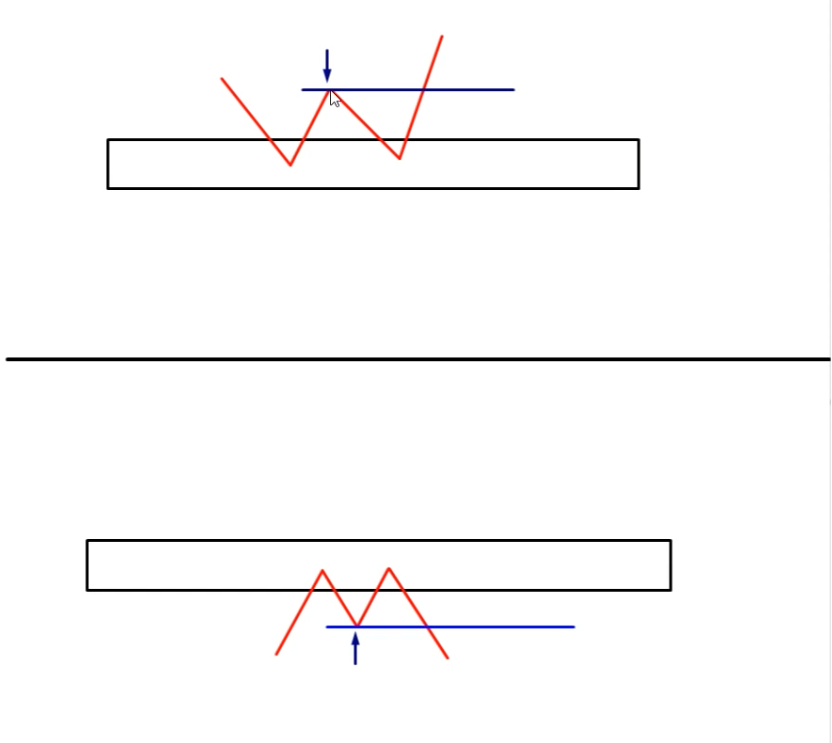
- Candle Close: market buy after bullish candle close at support/market sell after bearish candle close at resistance
- Pros: more likely to avoid trades where the structure gets completely smashed (eg. rounded retest), easy to backtest and journal
- Cons: poor R/R if very strong reaction at the structure
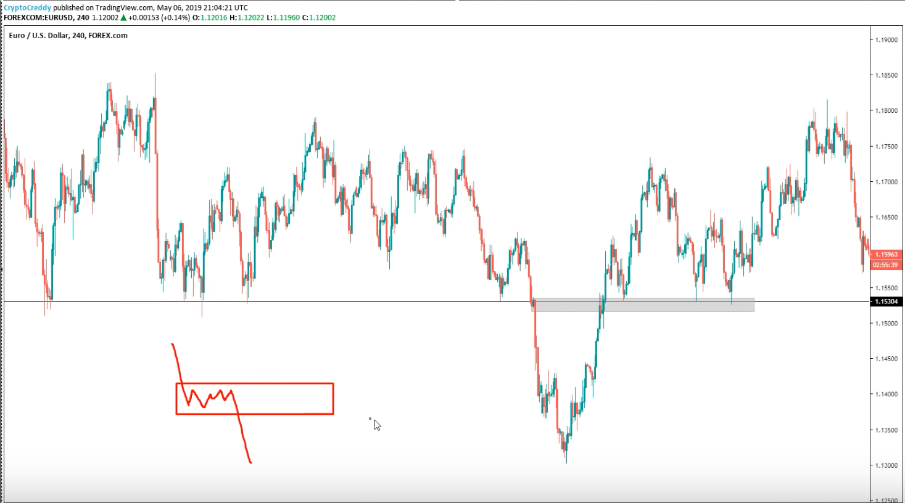
- Momentum: market buy after key resistance smashed/market sell after key support smashed on a closing basis
- Premium: markets don’t always retrace/retest levels
- Pros: catch impulsive moves that don’t retrace
- Cons: can form bad habit of chasing the market, study the market you trade to see if there’s a need for momentum trading
- Checklist:
- good reason to think price will move higher/lower
- clear invalidation
- clear target
- actionable R:R → trade can be taken in ‘no man’s land’ at market

- Acceptance: market buy on consecutive candle closes above resistance/market sell on consecutive candle closes below support
- Pros: doesn’t require precision entries or require much time babysitting the charts
- Cons: needs patience, takes a while to play out
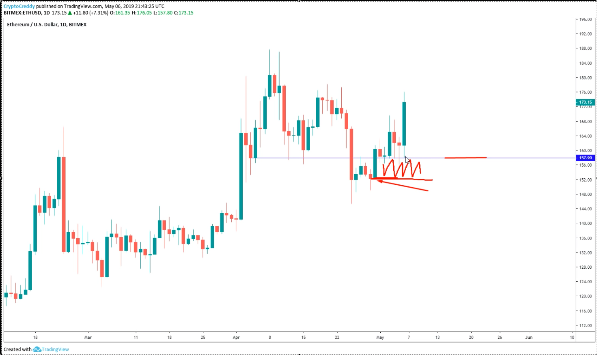
11: Support/Resistance Trade Setup (Clean Double Close/CDC)
- Specific S/R setup that Cred trades
Immediate vs Rounded
- Immediate: price closes back below resistance/above support in the next candle*
- Rounded: price runs away having broken the level but fails on the eventual retest of the level
Bullish Clean Double Close:
- Support level forms
- Price closes below the level
- When price next trades to the level, it closes above it impulsively
- Crucially: there must be no touches/retests in between
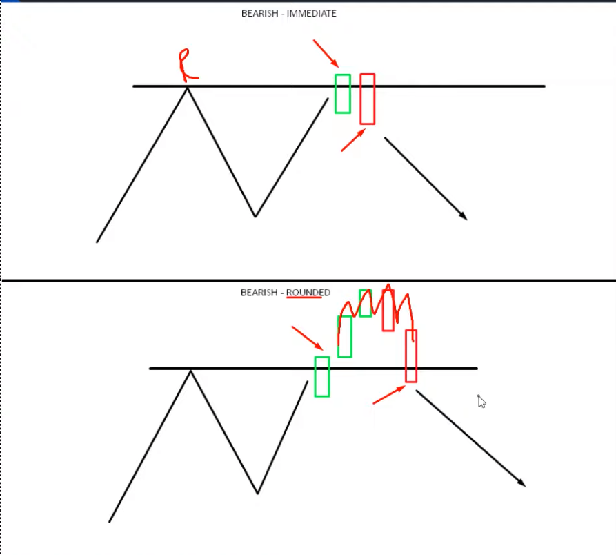
Bearish Clean Double Close
- Resistance level forms
- Price closes above the level
- When price next trades to the level, it closes below it impulsively
- Crucially: there must be no touches/retests in between
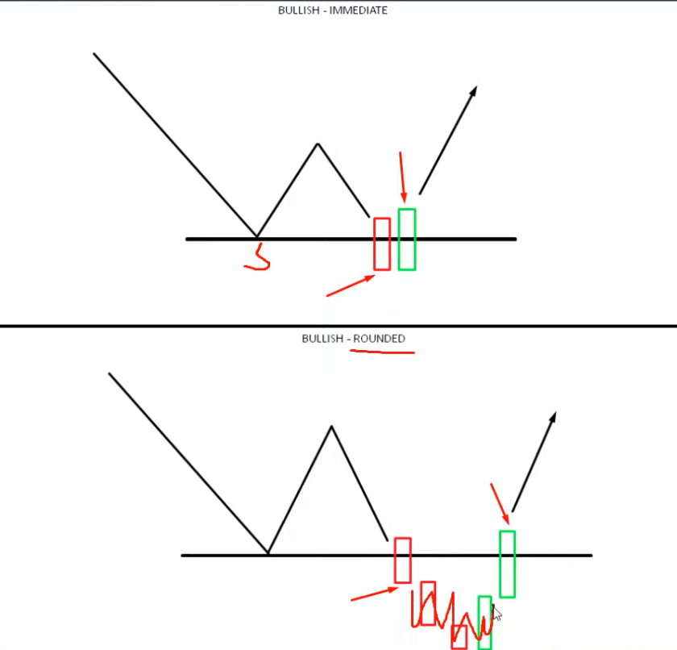
Structure:
- The level must be cleanly broken both ways but especially on the second break i.e. the trap
- There must be no retest/wick/interaction of any kind between break 1 and break 2
- no variant better than the others
Time Frames:
- HTF are superior, especially daily
Entry Triggers
- Option 1: market order on candle close through the level
- Clear trigger but some discretion as to whether the break is impulsive enough
- Aggressive
- Can be inactionable in terms of R:R if price closed too far from the level
- Option 2: limit order at the broken level once candle has closed through it
- Clearest trigger
- Conservative
- Can assess in advance whether the setup is actionable or not
- Risk of not being filled/price not pulling back (This is normal in trading)
- Option 3: market order at the broken level once price retests it following the break
- Most discretionary trigger
- If your trading style deals well with reactions at a level, you’ll probably do this anyway
- Harder to track
Stop Placement
Whichever you employ: make sure your stop doesn’t land at an S/R level → always check!
Context is very important here and will usually dictate which is more appropriate
- Option 1: thrust candle stop
- If bullish: stop below the candle that broke the level the second time
- If bearish: stop above the candle that broke the level the second time
- Reasonably aggressive, can sometimes be too tight if the candle that broke the level isn’t particularly big. If so, move a couple of candles back. Works best with a big (and ideally engulfing) candle
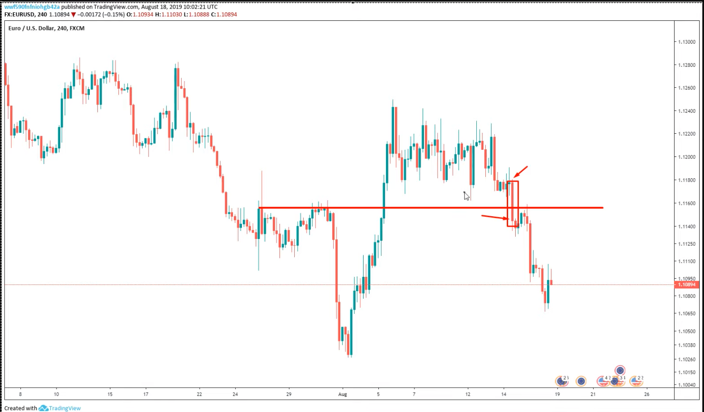
- Option 2: furthermost deviation
- If bullish: lowest low made before the level was broken again
- If bearish: highest high made before the level was broken again
- Conservative, but won’t always give actionable R:R e.g. with rounded retests that made a lot of space
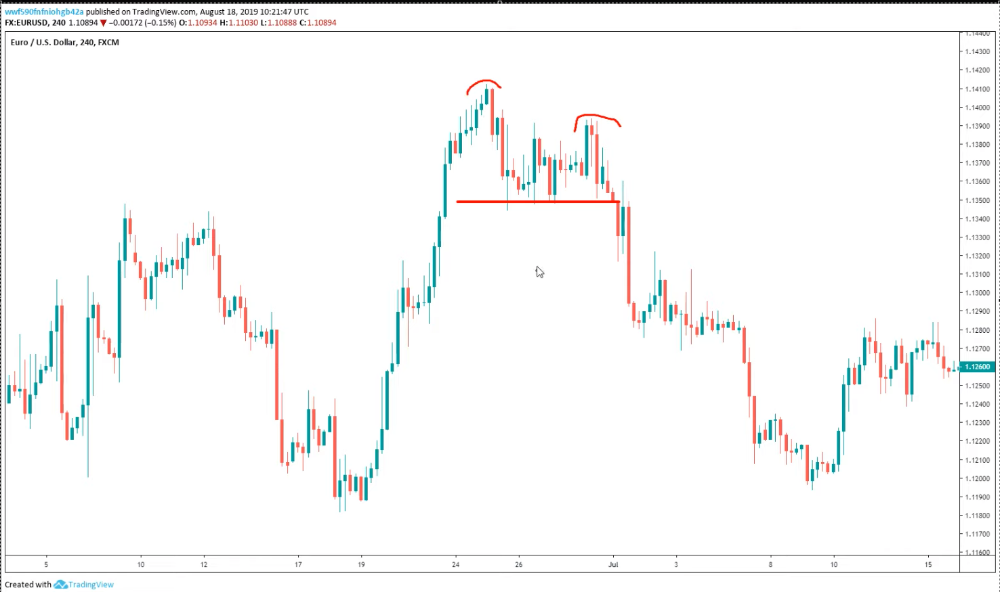
Probability Enhancers
- Good level selection: clear, high time frame, violent and significant levels perform better than random highs/lows
- Second break/break back through the level should be strong and fast: stronger/faster break = less time for those offside to mitigate = more traders trapped. Ideally some sort of engulfing candle
- First/false break spikes into liquidity: provides a factor of confluence that the first move was a trap
- Trend considerations
- In an uptrend, bullish CDC setups are more likely to form and are higher probability
- With the aim of bringing in shorts for long liquidity → upside continuation
- In a downtrend, bearish CDC setups are more likely to form and are higher probability
- With the aim of bringing in longs for short liquidity → downside continuation
- In an uptrend, bullish CDC setups are more likely to form and are higher probability
Summary
Next Steps:
- learn more candlestick patterns
- research into hedging, expectancy, laddering risk management
- funding
- liquidations data and stats for the market
- bullish/bearish divergence
- indicators for when big players are trading/active in the markets
- look up more oscillators (MACD, B)